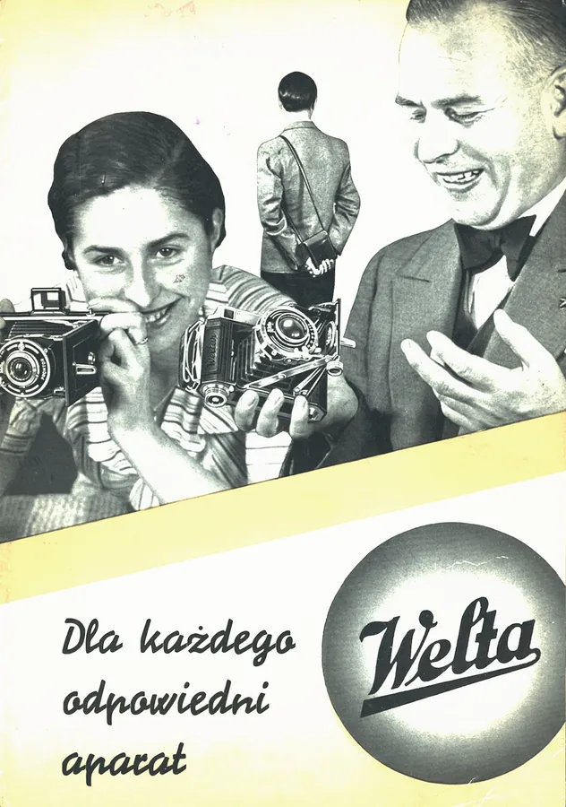

Reklama do 1945 roku
Foldery, cenniki i ogłoszenia firm fotograficznych do 1945 roku, polskie i zagraniczne.

Reklamy z przedwojennej polskiej prasy fotograficznej

25 lat Welta, 1939 r.

Fotografujcie przyborami AGFA

Foldery, cenniki i ogłoszenia firm fotograficznych do 1945 roku, polskie i zagraniczne.
